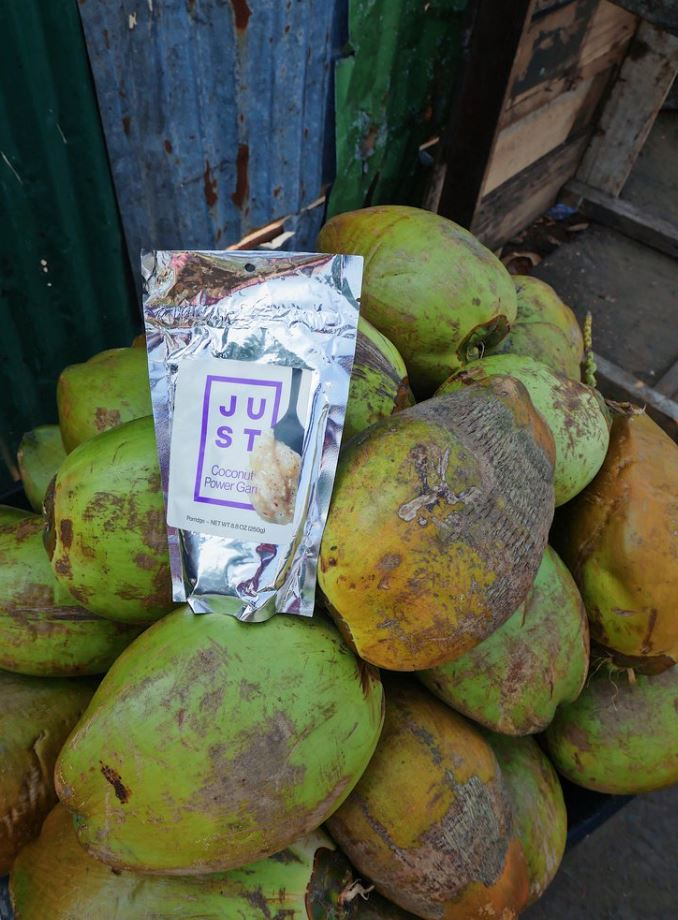

Farming in Liberia
Sustainable farming in Liberia is just the beginning. We believe that Liberia and West Africa can feed themselves through sustainable, agricultural practices and modern processing techniques. Food security continues to be a major problem not only in Liberia and West Africa, but also throughout several other developing nations around the world. Our aim at Kawadah Farms is to produce Nutritious and easily accessible food options, as well as create opportunities that allow local farmers and processors greater access to the domestic, regional and global marketplace thus leading to more financial stability for themselves and their families.
What is Cassava?
Cassava is the third-largest source of food carbohydrates in the tropics, after rice and maize. Cassava is a major staple food in the developing world, providing a basic diet for over half a billion people. It is one of the most drought-tolerant crops, capable of growing on marginal soils. Nigeria is the world's largest producer of cassava, while Thailand is the largest exporter of cassava starch.
Our Products
Our first product to market is Power Gari, which we have produced in partnership with JUST. This revolutionary take on traditional gari is a highly nutritious meal made of locally grown cassava, palm oil, cane sugar, soy protein, salt and vitamins.



Our Mission
Kawadah farm is dedicated to providing affordable food options and economic opportunities for the people of Liberia through the creaton of a food processing engine to bridge the gap between smallholder farmers and the market place.
Our Vision
Kawadah Farms is a food production organization that is dedicated to feeding the people of Liberia and creating economic opportunities for farmers and other individuals throughout the country.
Our Values
Our busness was built on the core concept of empowering women farmers. To date, everything we have accomplished has been due to their hard work and commitment to thier communities.
Co-founder David and Harrison. Harrison mother is one of our farm leaders.
She believes in the work she's doing because it will allow her to pay for Harrison's education.